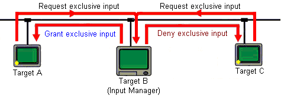
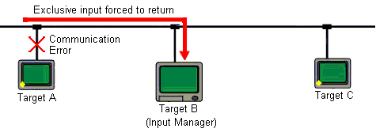

|
|
|
|
|
|
|
|
The input manager target machine controls which target is granted exclusive input. When one of the targets tries to display an exclusive input panel, it requests permission for exclusive input from the input manager target machine. The input manager either grants or refuses permission, depending on whether or not another target is already using exclusive input.

After a target is granted exclusive input, that target relinquishes exclusive input if any of the following occurs:
You change to a panel that does not use exclusive input
The time-out time elapses without any input operations, such as panel touch and function key inputs
The target loses its communication link with the input manager target machine, which also prompts a message to display.
The communication link between the exclusive input target and input manager target must remain open for exclusive input to continue. If the communication link gets broken, exclusive input is relinquished and exclusive input becomes available to other targets on the network.

After a target relinquishes exclusive input, the target is forced to change to its initial panel. The target reverts to its initial panel when the communication link with the input manager target machine is broken or when the time-out time elapses without any input operations.

The initial panel cannot be set up with exclusive input. The initial panel is the default panel that displays when exclusive input fails. Every other panel in a target can be set up with exclusive input.
The Input Manager target machine can display exclusive input panels even when it is disconnected from the network. Other target machines cannot display exclusive input panels when disconnected from the network.